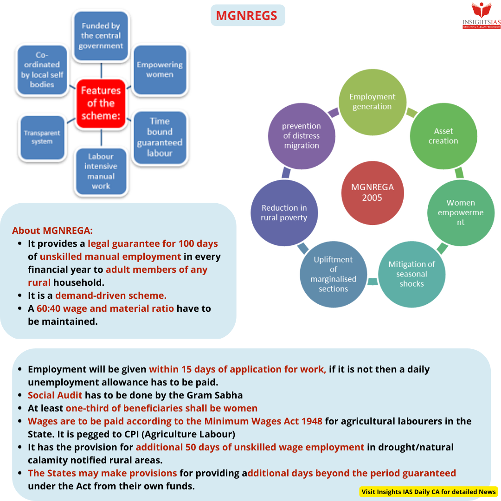
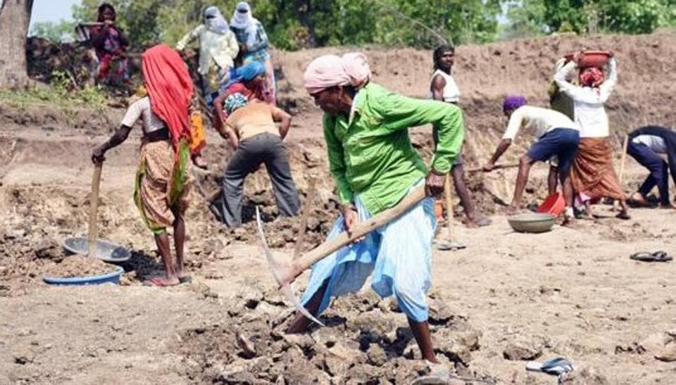

Mahatma Gandhi National Rural Employment Guarantee Scheme (MGNREGS)
The Mahatma Gandhi National Rural Employment Guarantee Scheme (MGNREGS) is a flagship employment program by the Government of India, aiming to enhance the livelihood security of rural households by providing at least 100 days of guaranteed wage employment in a financial year to adult members willing to do unskilled manual work.

Objectives
- Provide legal guarantee for wage employment to rural households.
- Create durable assets and strengthen the livelihood resource base of rural communities.
- Ensure social inclusion by strengthening the livelihood base of rural poor.

Key Features
- Legal Right to Work: MGNREGS provides a legal guarantee for wage employment to rural households.
- Demand-Driven Scheme: Employment is provided based on the demand for work by wage-seekers.
- Decentralized Planning: Gram Panchayats (GPs) play a significant role in planning and implementing projects, ensuring that local needs are addressed.
- Transparency and Accountability: The scheme emphasizes social audits and grievance redressal mechanisms to ensure funds are utilized efficiently.
- Wage Payments: Wages are paid within a week or fifteen days at most, directly into the bank or post office accounts of the workers. Men and women are paid equally.
Eligibility Criteria
- Applicant must be an Indian citizen above 18 years of age.
- Applicant must reside in a rural area.
- Applicant must be willing to undertake unskilled manual work.
Application Process
- Individuals can apply for work by submitting an application to their local Gram Panchayat.
- The Gram Panchayat registers the household and issues a job card after verification.
- Employment is provided within 15 days of the application, preferably within a 5-kilometer radius of the applicant's residence.
Permissible Works
The scheme focuses on works that lead to the creation of durable assets and strengthen the livelihood resource base of rural communities. Some of the permissible works include:
- Water conservation and water harvesting.
- Drought proofing, including afforestation and tree plantation.
- Irrigation canals, including micro and minor irrigation works.
- Renovation of traditional water bodies, including desilting of tanks.
- Land development.
- Flood control and protection works, including drainage in waterlogged areas.
- Rural connectivity to provide all-weather access, including culverts and roads within a village.
Recent Developments
As of February 1, 2025, the Government of India has allocated ₹860 billion for the MGNREGS for the upcoming financial year, maintaining the same level of funding as the current year. This allocation underscores the government's commitment to supporting rural employment amidst economic challenges.